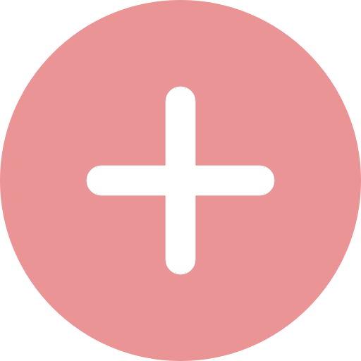

Réalisation d’un portrait chinois à l’aide du langage HTML et du code CSS.
Un portrait chinois consiste à définir ma personnalité sous une forme originale.


J’ai visité deux villes inoubliables lors du voyage de deuxième année en
DUT
MMI : Liverpool et Manchester. Le thème de notre équipe était le multiculturalisme. Nous avions pour
projet la réalisation d’une courte vidéo retraçant notre voyage.

Mon CV vidéo est une façon originale de découvrir mes compétences, mes
passions et mes études en anglais.

Travler est une agence de 5 étudiants dont le projet était la réalisation
d’un
site web. J’étais chef de projet et communicante et ma principale mission consistait à alimenter les
réseaux sociaux.


Identité visuelle de Loyal, créateur de cosmétiques qui vous propose de
découvrir sa toute première collection : Blue Lagoon.

En cours d’expression écrite et orale, j’ai rédigé le Pitch, le Synopsis,
la
note d’intention, la distribution des personnages et le scénario d’un court-métrage : « Il faut du
temps
».

Il était une fois cinq étudiantes ambitieuses et rêveuses. En pleine
exploration de l’audiovisuel à l’Université Paris-Est Marne-la-Vallée elles avaient pour mission de
réaliser un court-métrage, avec pour thématique le conte.

Mon stage au Ceser m’a fait découvrir le monde de l’entreprise. J’ai
travaillé
en tant que chargée de communication et ai réalisé diverses missions comme la rédaction d’actualités
ou
l’organisation de séances plénières.

J’ai analysé le storytelling du film publicitaire “Café Grand’mère-Au
revoir
Olivia”. À travers cette publicité moderne, le film met l’accent sur la relation actuelle qui existe
entre les générations.

En cours de Webdesign, nous avons tenté, en équipe, de répondre à une
problématique : Comment les étudiants peuvent-ils agir collectivement pour l’environnement ?

Maquette d’un jeu concours organisé par la marque de café San Marco pour
tenter de gagner une collection de tasses Up’Cup.
En binôme, nous devions travailler sur la Communication externe d'une
entreprise. Avec ma camarade, nous avons choisi Chupa Chups pour sa créativité.